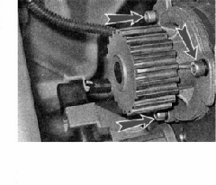
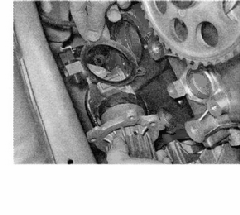
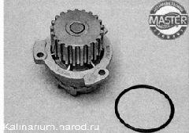

Насос охлаждающей жидкости - заменаСнятие 1. Сливаем охлаждающую жидкость. 2. Снимаем заднюю крышку ремня привода ГРМ. 3. Шестигранным ключом на 5 мм отворачиваем три болта крепления насоса охлаждающей жидкости. 
4. При необходимости поддев отверткой, снимаем насос и прокладку с блока цилиндров.

Установка Устанавливаем насос охлаждающей в обратной последовательности, заменив прокладку насоса новой. В запасные части могут поставляться насосы с резиновым уплотнительным кольцом. Под такие насосы прокладку не устанавливают. |